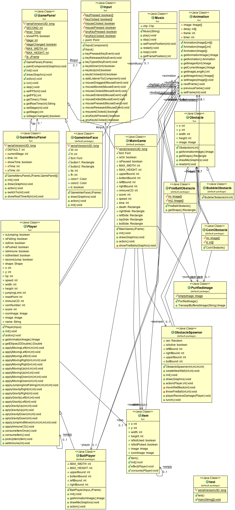

Classes
GamePanel - Abstract class that simply allows you to initialize game variables, draw the objects, and perform actions for each object.
GameMenuPanel - Is a GamePanel that takes an argument of multiple GamePanels and has the ability to run panels one at a time, and switch between panels.
Input - Reads key input from the user. Checks for Key down, key up, and key pressed.
Music - Takes a sound file as an argument and plays it to the user.
Player - Contains all of the main functions and variables for the player.
Obstacle - Creates obstacles to block the player.
Item - Creates an item that can be consumed or used as an effect.
Animation - Takes an array of images as an argument and displays them in a series, creating an animation.
BallPlayer - Creates the object that the player controls. Draws the animation for the object, and contains variables to define its bounding box.
BubbleObstacle - An item that if the player hits it, he gains a shield.
Coin - An object that when picked up gives you extra score.
FireBallObstacle - An object that damages you when it collides with your player.
GameInterface - Creates the menu for the game and changes the menu buttons when they are hovered over.
MainGame - Contains the main GamePanel which starts and handles all important functionality of the game.
ObstacleSpawner - Creates randomly generated or pre-set obstacles.
PurifiedImage - Removes the background from an image in order to give it a transparent background.
test - Creates the JFrame, main GamePanel, and runs the game.
Back

Back